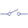
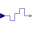

InterfacesLibrary of partial blocks for components with clocked Real signals |
|
Package Contents
|  |
Basic graphical layout of block used for sampling of Real signals |
|
Basic block used for sampling of Real signals |
|
|  |
Basic block used for zero order hold of Real signals |
|
Block with clocked single input and clocked single output Real signals |
|
|
Block with multiple clocked input and multiple clocked output Real signals |
|
|
Block with clocked single output Real signal |
|
|
Interface for SISO blocks with Real signals that add noise to the signal |
Information
This information is part of the Modelica Standard Library maintained by the Modelica Association.
This package contains partial blocks that are used to construct blocks operating on clocked Real signals.